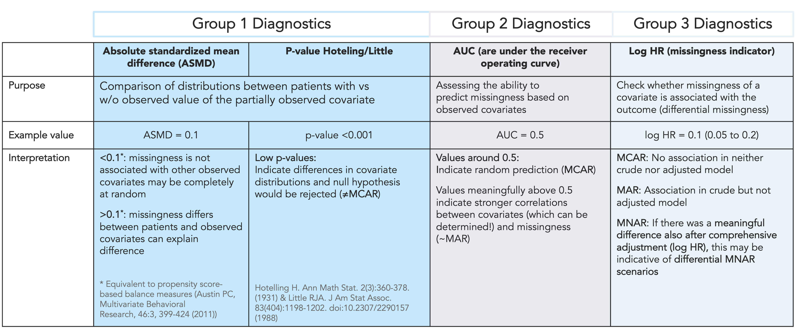
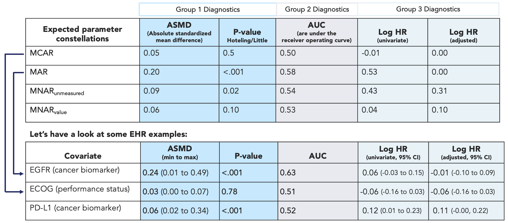

Structural Missing Data Investigations

This package aims to be a helpful addition to routine healthcare database analytics with a focus on structural missing data investigations.
The theoretical backbone of this package is based on a large-scale plasmode simulation performed by the Sentinel Innovation Center workgroup:
Approaches to Handling Partially Observed Confounder Data From Electronic Health Records (EHR) In Non-randomized Studies of Medication Outcomes.
The corresponding manuscripts are published open access:
Weberpals J, Raman SR, Shaw PA, Lee H, Russo M, Hammill BG, Toh S, Connolly JG, Dandreo KJ, Tian F, Liu W, Li J, Hernández-Muñoz JJ, Glynn RJ, Desai RJ. A Principled Approach to Characterize and Analyze Partially Observed Confounder Data from Electronic Health Records. Clin Epidemiol. 2024 May 21;16:329-343. doi: 10.2147/CLEP.S436131. PMID: 38798915; PMCID: PMC11127690.
Weberpals J, Raman SR, Shaw PA, Lee H, Hammill BG, Toh S, Connolly JG, Dandreo KJ, Tian F, Liu W, Li J, Hernández-Muñoz JJ, Glynn RJ, Desai RJ. smdi: an R package to perform structural missing data investigations on partially observed confounders in real-world evidence studies. JAMIA Open. 2024 Jan 31;7(1):ooae008. doi: 10.1093/jamiaopen/ooae008. PMID: 38304248; PMCID: PMC10833461.
If you encounter any unforeseen errors or have any suggestions, comments or recommendations, please feel free to reach out to janick.developer@gmail.com or open an issue.
Installation
To install the CRAN version of the package, run the following command:
install.packages("smdi")You can install the latest GitLab release version of smdi using the devtools package via:
devtools::install_git("https://github.com/janickweberpals/smdi.git")To install the development version, please use the dev branch:
devtools::install_git("https://github.com/janickweberpals/smdi.git", ref = "dev")About
Objectives: The objectives of this project were to develop a framework and tools to assess the structure of missing data processes in studies utilizing electronic health record (EHR) data.
Missing data in important prognostic factors in EHR are frequent. So far, the most frequent data taxonomies are:
- Mechanisms: Missing completely at random (MCAR), at random (MAR) and not at random (MNAR)
- Patterns: Monotone, Non-monotone
However, in an empirical study, it is usually unclear which of the missing data mechanisms and patterns are dominating.
What did the study find? In brief, large-scale simulations revealed that characteristic patterns of diagnostic parameters matched to common missing data structure based on three group diagnostics:
Group diagnostic 1: Comparison of distributions between patients with or without an observed value of the partially observed covariate
Group diagnostic 2: Assessing the ability to predict missingness based on observed covariates
Group diagnostic 3: Estimating if the missingness of a covariate is associated with the outcome (differential missingness)

How can this be applied to inform a real-world database study? The observed diagnostic pattern of a specific study will give insights into the likelihood of underlying missingness structures. This is how an example could look like in a real-world database study:

smdi diagnostics can be applied to give insights into the likelihood of underlying missingness structures in a real-world database study.While the manuscript is underway, in the meantime please refer to the presentation at the 2023 Innovation Day to learn more.
Further references
This project builds up on pivotal work done by several groups and recently published frameworks and guidance papers
Weberpals J, Raman SR, Shaw PA, Lee H, Russo M, Hammill BG, Toh S, Connolly JG, Dandreo KJ, Tian F, Liu W, Li J, Hernández-Muñoz JJ, Glynn RJ, Desai RJ. A Principled Approach to Characterize and Analyze Partially Observed Confounder Data from Electronic Health Records. Clin Epidemiol. 2024 May 21;16:329-343. doi: 10.2147/CLEP.S436131. PMID: 38798915; PMCID: PMC11127690.
Weberpals J, Raman SR, Shaw PA, Lee H, Hammill BG, Toh S, Connolly JG, Dandreo KJ, Tian F, Liu W, Li J, Hernández-Muñoz JJ, Glynn RJ, Desai RJ. smdi: an R package to perform structural missing data investigations on partially observed confounders in real-world evidence studies. JAMIA Open. 2024 Jan 31;7(1):ooae008. doi: 10.1093/jamiaopen/ooae008. PMID: 38304248; PMCID: PMC10833461.
Sondhi A, Weberpals J, Yerram P, Jiang C, Taylor MD, Samant M, Cherng S. A Systematic Approach Towards Missing Lab Data in Electronic Health Records: A Case Study in Non-Small Cell Lung Cancer and Multiple Myeloma. CPT Pharmacometrics Syst Pharmacol. 2023 Jun 15. doi: 10.1002/psp4.12998. Epub ahead of print. PMID: 37322818.
Lee KJ, Tilling KM, Cornish RP, Little RJA, Bell ML, Goetghebeur E, Hogan JW, Carpenter JR; STRATOS initiative. Framework for the treatment and reporting of missing data in observational studies: The Treatment And Reporting of Missing data in Observational Studies framework. J Clin Epidemiol. 2021 Jun;134:79-88. doi: 10.1016/j.jclinepi.2021.01.008. Epub 2021 Feb 2. PMID: 33539930; PMCID: PMC8168830.
Carpenter JR, Smuk M. Missing data: A statistical framework for practice. Biom J. 2021 Jun;63(5):915-947. doi: 10.1002/bimj.202000196. Epub 2021 Feb 24. PMID: 33624862.